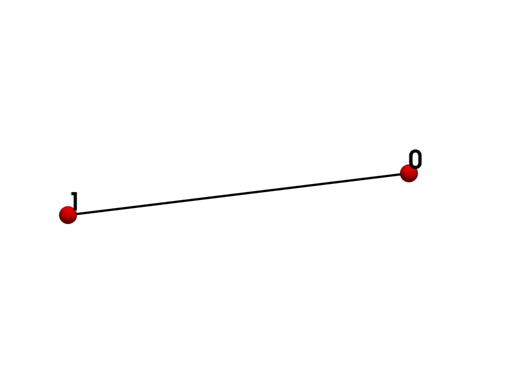
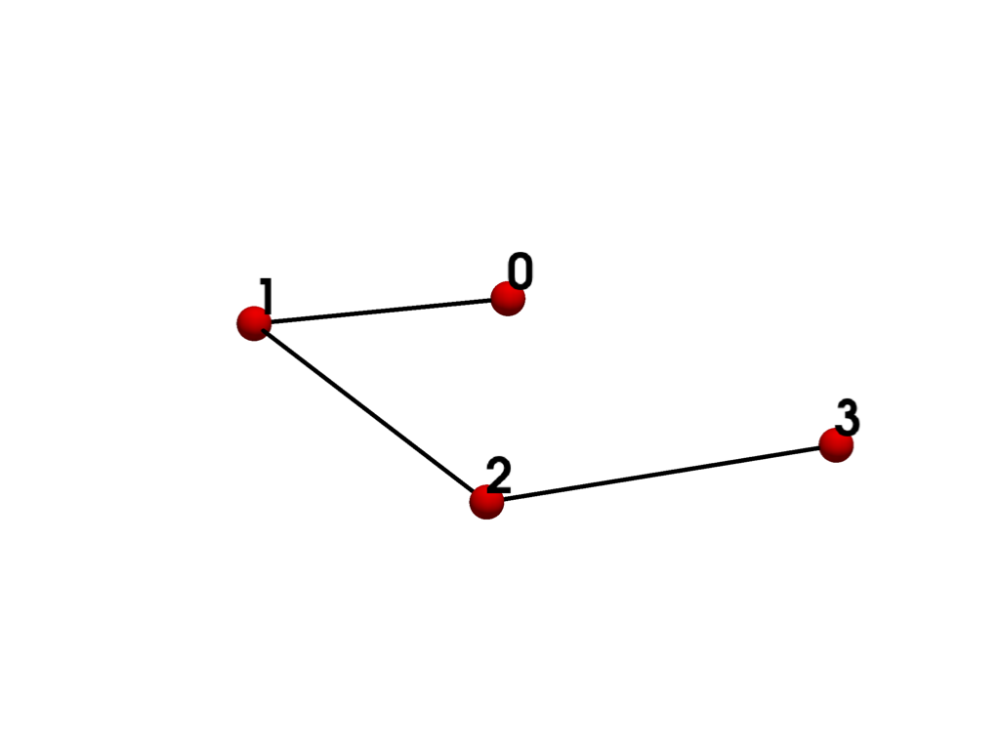
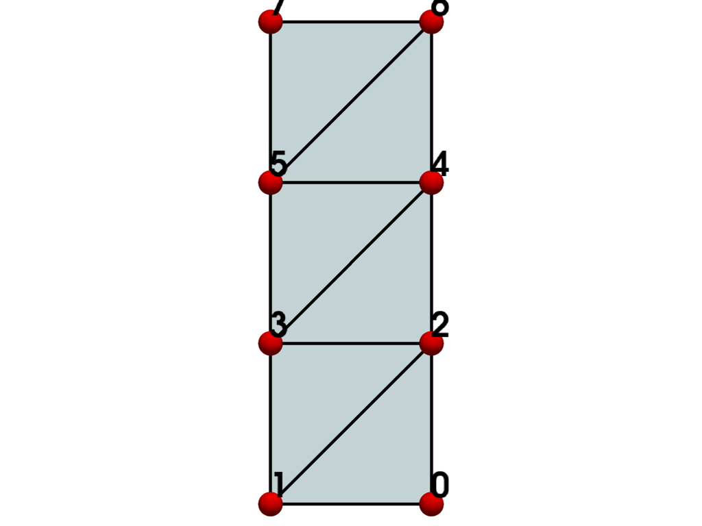
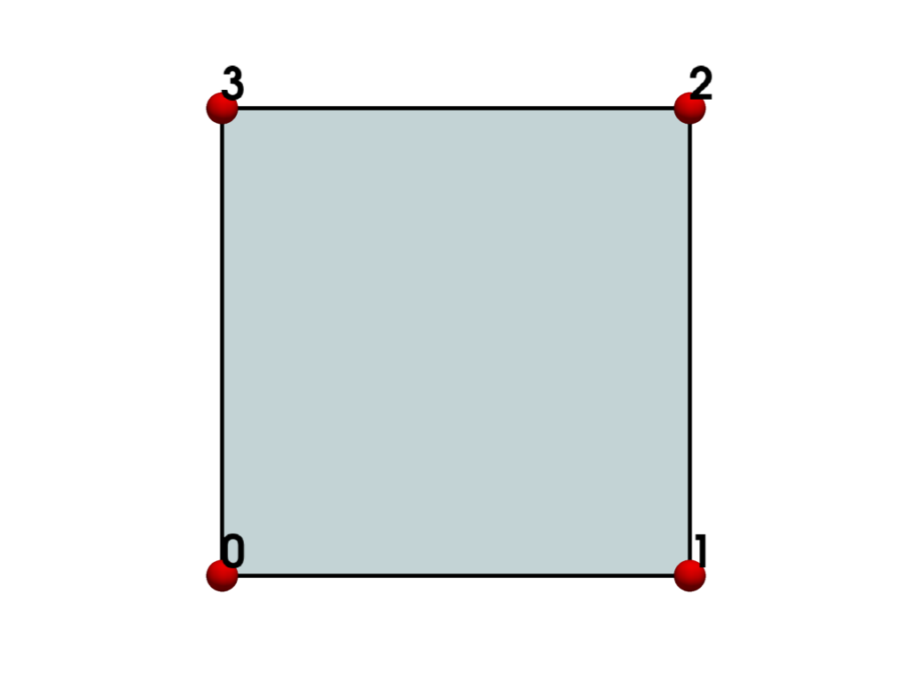
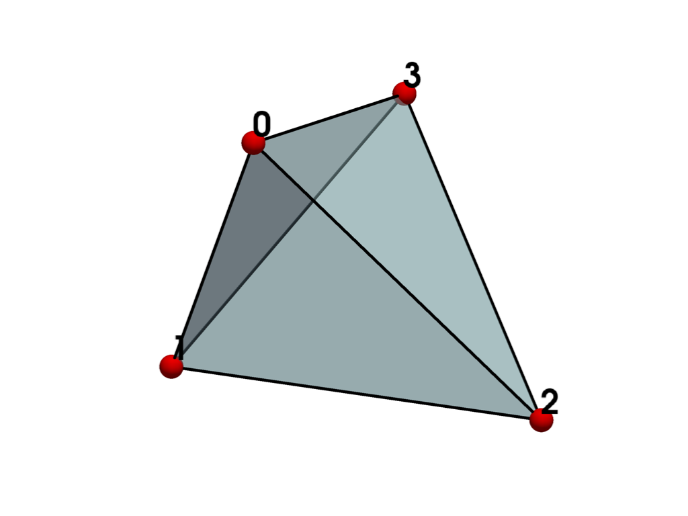
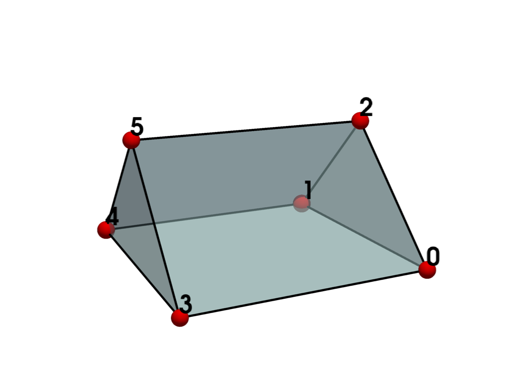
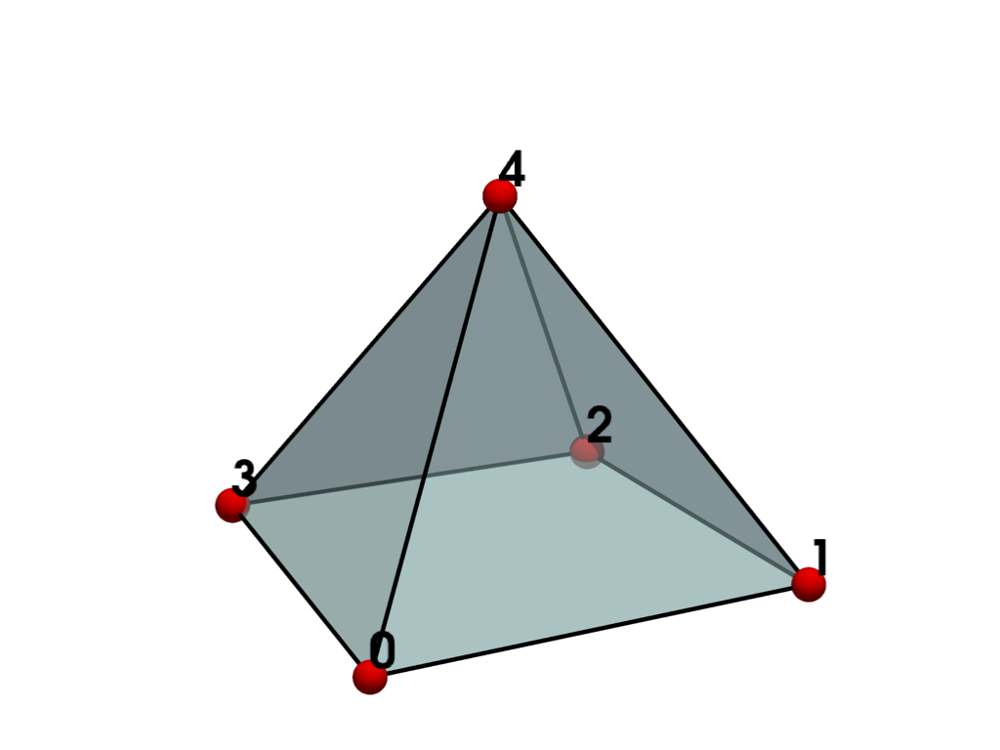
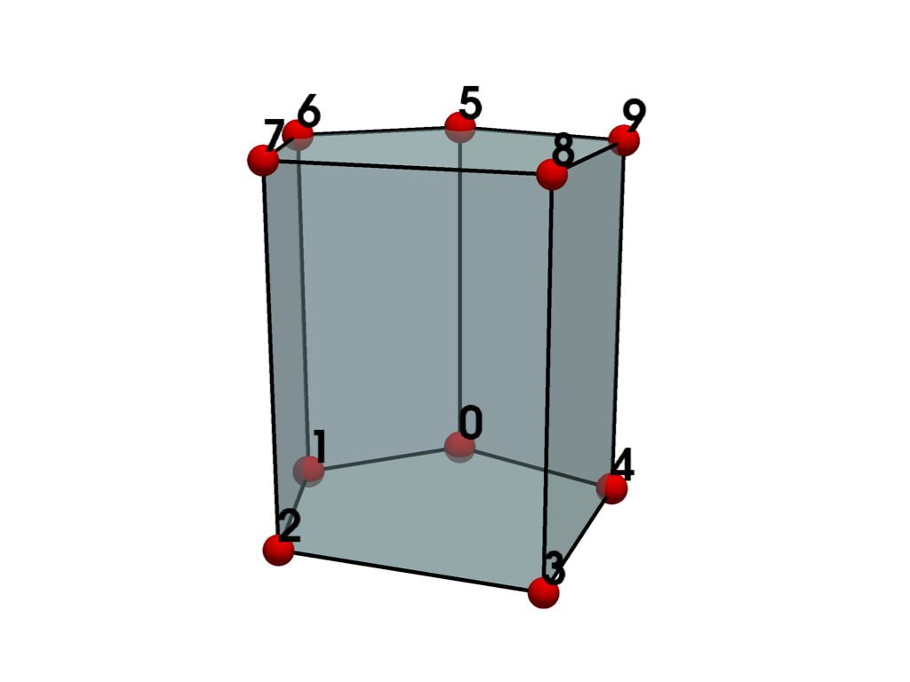
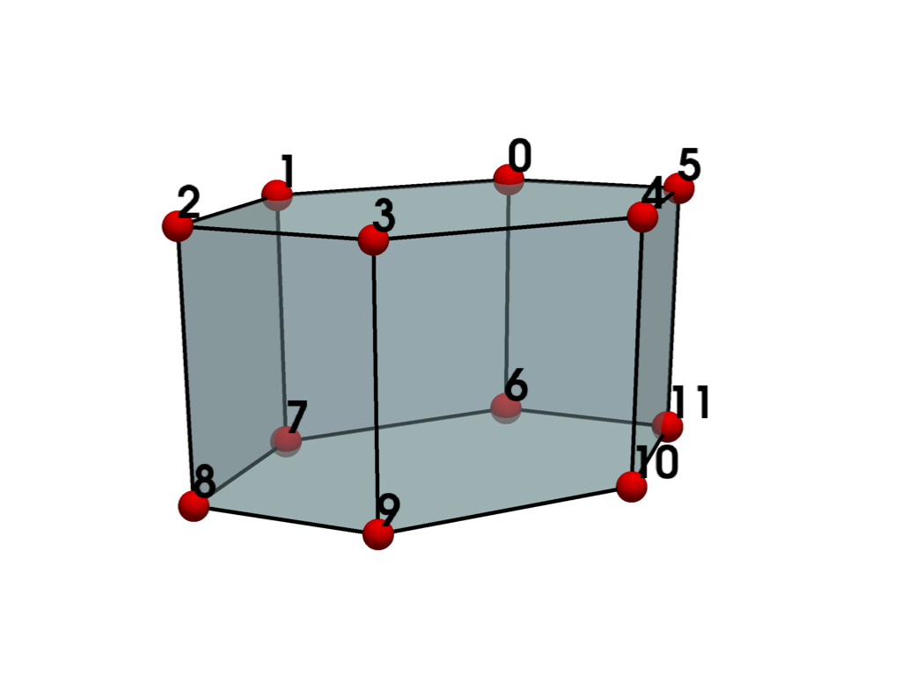
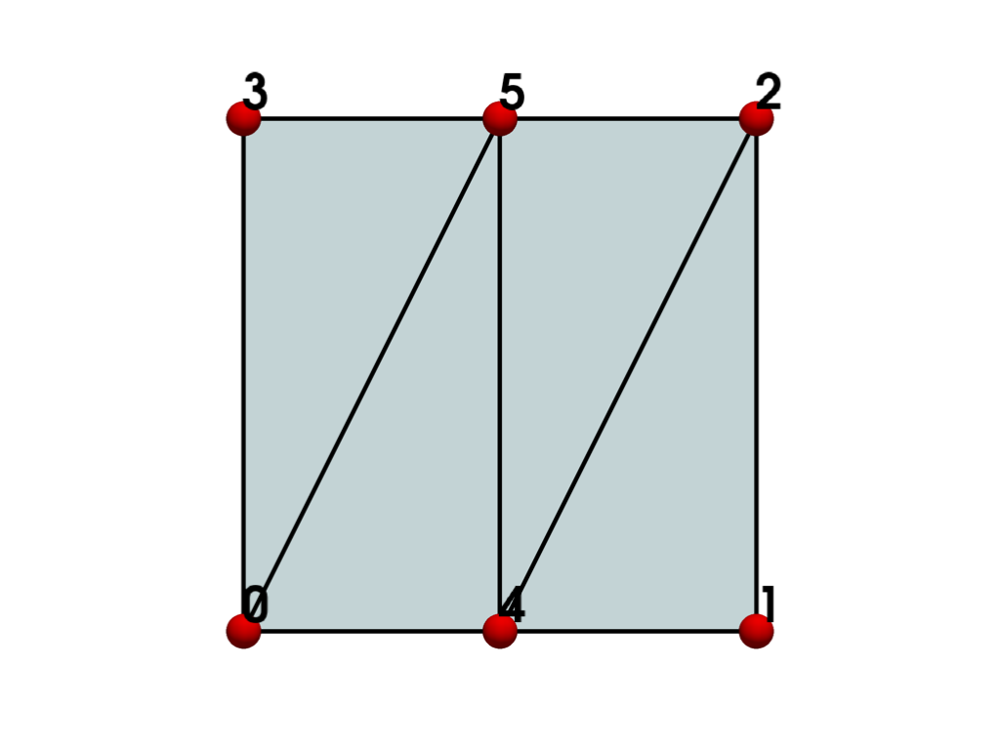

pyvista.CellType#
- enum CellType(value)[ソース]#
セルの種類を定義します．
Cells are defined by specifying a type in combination with an ordered list of points. The ordered list, often referred to as the connectivity list, combined with the type specification, implicitly defines the topology of the cell. The x-y-z point coordinates define the cell geometry.
Although point coordinates are defined in three dimensions, the cell topology can be 0, 1, 2, or 3-dimensional.
Cells can be primary (e.g. triangle) or composite (e.g. triangle strip). Composite cells consist of one or more primary cells, while primary cells cannot be decomposed.
Cells can also be characterized as linear or non-linear. Linear cells use linear or constant interpolation. Non-linear cells may use quadratic, cubic, or some other interpolation.
This enumeration defines all cell types used in VTK and supported by PyVista. The type(s) of cell(s) to use is typically chosen based on application need, such as graphics rendering or numerical simulation.
参考
- vtkCellType.h
List of all cell types defined in VTK.
- 線形セル
Detailed example using linear cells.
- 多面体による非構造化グリッド
Example creating a mesh with
POLYHEDRONcells.- セル
Examples creating a mesh comprising a single cell.
例
キューブを1つ作成します．セルタイプは
CellTypeを使用して定義されていることに注意してください．>>> import numpy as np >>> from pyvista import CellType >>> import pyvista as pv >>> cells = np.array([8, 0, 1, 2, 3, 4, 5, 6, 7]) >>> cell_type = np.array([CellType.HEXAHEDRON], np.int8) >>> points = np.array( ... [ ... [0, 0, 0], ... [1, 0, 0], ... [1, 1, 0], ... [0, 1, 0], ... [0, 0, 1], ... [1, 0, 1], ... [1, 1, 1], ... [0, 1, 1], ... ], ... dtype=np.float32, ... ) >>> grid = pv.UnstructuredGrid(cells, cell_type, points) >>> grid UnstructuredGrid (...) N Cells: 1 N Points: 8 X Bounds: 0.000e+00, 1.000e+00 Y Bounds: 0.000e+00, 1.000e+00 Z Bounds: 0.000e+00, 1.000e+00 N Arrays: 0
- メンバー種別:
有効な値は以下の通りです:
- EMPTY_CELL = <CellType.EMPTY_CELL: 0>#
Linear Primary 0D Points: 0 Edges: 0 Faces: 0
Used as a place-holder during processing.
- VERTEX = <CellType.VERTEX: 1>#
Linear Primary 0D Points: 1 Edges: 0 Faces: 0
Represents a point in 3D space.
The vertex is a primary zero-dimensional cell. It is defined by a single point.
- POLY_VERTEX = <CellType.POLY_VERTEX: 2>#
Linear Composite 0D Points: variable Edges: 0 Faces: 0
Represents a set of points in 3D space.
The polyvertex is a composite zero-dimensional cell. It is defined by an arbitrarily ordered list of points.
- LINE = <CellType.LINE: 3>#
- 
Linear Primary 1D Points: 2 Edges: 0 Faces: 0
Represents a 1D line.
The line is a primary one-dimensional cell. It is defined by two points. The direction along the line is from the first point to the second point.
- POLY_LINE = <CellType.POLY_LINE: 4>#
- 
Linear Composite 1D Points: variable Edges: 0 Faces: 0
Represents a set of 1D lines.
The polyline is a composite one-dimensional cell consisting of one or more connected lines.
More info
The polyline is defined by an ordered list of n+1 points, where n is the number of lines in the polyline. Each pair of points
(i, i+1)defines a line.
- TRIANGLE = <CellType.TRIANGLE: 5>#
Linear Primary 2D Points: 3 Edges: 3 Faces: 0
Represents a 2D triangle.
The triangle is a primary two-dimensional cell. The triangle is defined by a counter-clockwise ordered list of three points.
More info
The order of the points specifies the direction of the surface normal using the right-hand rule.
- TRIANGLE_STRIP = <CellType.TRIANGLE_STRIP: 6>#
- 
Linear Composite 2D Points: variable Edges: variable Faces: 0
Represents a 2D triangle strip.
The triangle strip is a composite two-dimensional cell consisting of one or more triangles. It is a compact representation of triangles connected edge-to-edge.
More info
The triangle strip is defined by an ordered list of n+2 points, where n is the number of triangles. The ordering of the points is such that each set of three points
(i,i+1,i+2)with0≤i≤ndefines a triangle.The connectivity of a triangle strip is three points defining an initial triangle, then for each additional triangle, a single point that, combined with the previous two points, defines the next triangle.
The points defining the triangle strip need not lie in a plane.
- POLYGON = <CellType.POLYGON: 7>#

Linear Composite 2D Points: variable Edges: variable Faces: 0
Represents a 2D n-sided polygon.
The polygon is a primary two-dimensional cell. It is defined by an ordered list of three or more points lying in a plane.
More info
The polygon has n edges, where n is the number of points in the polygon. Define the polygon with n-points ordered in the counter-clockwise direction. Do not repeat the last point.
The polygon normal is implicitly defined by a counterclockwise ordering of its points using the right-hand rule.
The polygon may be non-convex, but may not have any internal holes, and cannot self-intersect.
- PIXEL = <CellType.PIXEL: 8>#
Linear Primary 2D Points: 4 Edges: 4 Faces: 0
Represents a 2D orthogonal quadrilateral.
The pixel is a primary two-dimensional cell defined by an ordered list of four points.
警告
This definition of a pixel differs from the conventional definition which describes a single constant-valued element in an image. The meaning of this term can vary depending on context. See 画像データの表現 for examples.
More info
The points are ordered in the direction of increasing axis coordinate, starting with x, then y, then z.
Unlike a quadrilateral cell, the corners or a pixel are at right angles and aligned along x-y-z coordinate axes. It is used to improve computational performance.
- QUAD = <CellType.QUAD: 9>#
- 
Linear Primary 2D Points: 4 Edges: 4 Faces: 0
Represents a 2D quadrilateral.
The quadrilateral is a primary two-dimensional cell. It is defined by an ordered list of four points lying in a plane.
More info
The four points
(0,1,2,3)are ordered counterclockwise around the quadrilateral, defining a surface normal using the right-hand rule.The quadrilateral is convex and its edges must not intersect.
- TETRA = <CellType.TETRA: 10>#
- 
Linear Primary 3D Points: 4 Edges: 6 Faces: 4
Represents a 3D tetrahedron.
The tetrahedron is a primary three-dimensional cell. The tetrahedron is defined by a list of four non-planar points. It has six edges and four triangular faces.
More info
The tetrahedron is defined by the four points
(0-3)where(0,1,2)is the base of the tetrahedron which, using the right hand rule, forms a triangle whose normal points in the direction of the fourth point.
- VOXEL = <CellType.VOXEL: 11>#

Linear Primary 3D Points: 8 Edges: 12 Faces: 6
Represents a 3D orthogonal parallelepiped.
The voxel is a primary three-dimensional cell defined by an ordered list of eight points.
警告
This definition of a voxel differs from the conventional definition which describes a single constant-valued volume element. The meaning of this term can vary depending on context. See 画像データの表現 for examples.
More info
The points are ordered in the direction of increasing coordinate value.
Unlike a hexahedron cell, a voxel has interior angles of 90 degrees, and its sides are parallel to the coordinate axes. It is used to improve computational performance.
- HEXAHEDRON = <CellType.HEXAHEDRON: 12>#
Linear Primary 3D Points: 8 Edges: 12 Faces: 6
Represents a 3D rectangular hexahedron.
The hexahedron is a primary three-dimensional cell consisting of six quadrilateral faces, twelve edges, and eight vertices.
More info
The hexahedron is defined by the eight points
(0-7)where(0,1,2,3)is the base of the hexahedron which, using the right hand rule, forms a quadrilateral whose normal points in the direction of the opposite face(4,5,6,7).The faces and edges must not intersect any other faces and edges, and the hexahedron must be convex.
- WEDGE = <CellType.WEDGE: 13>#
- 
Linear Primary 3D Points: 6 Edges: 9 Faces: 5
Represents a linear 3D wedge.
The wedge is a primary three-dimensional cell consisting of two triangular and three quadrilateral faces.
More info
The cell is defined by the six points
(0-5)where(0,1,2)is the base of the wedge which, using the right hand rule, forms a triangle whose normal points outward (away from the triangular face(3,4,5)).The faces and edges must not intersect any other faces and edges, and the wedge must be convex.
- PYRAMID = <CellType.PYRAMID: 14>#
- 
Linear Primary 3D Points: 5 Edges: 8 Faces: 5
Represents a 3D pyramid.
The pyramid is a primary three-dimensional cell consisting of a rectangular base with four triangular faces. It is defined by an ordered list of five points.
More info
The pyramid is defined by the five points
(0-4)where(0,1,2,3)is the base of the pyramid which, using the right hand rule, forms a quadrilateral whose normal points in the direction of the pyramid apex at vertex(4). The parametric location of vertex(4)is[0, 0, 1].The four points defining the quadrilateral base plane must be convex.
The fifth apex point must not be co-planar with the base points.
- PENTAGONAL_PRISM = <CellType.PENTAGONAL_PRISM: 15>#
- 
Linear Primary 3D Points: 10 Edges: 15 Faces: 7
Represents a convex 3D prism with a pentagonal base and five quadrilateral faces.
The pentagonal prism is a primary three-dimensional cell defined by an ordered list of ten points.
More info
The prism is defined by the ten points
(0-9), where(0,1,2,3,4)is the base of the prism which, using the right hand rule, forms a pentagon whose normal points is in the direction of the opposite face(5,6,7,8,9).The faces and edges must not intersect any other faces and edges and the pentagon must be convex.
- HEXAGONAL_PRISM = <CellType.HEXAGONAL_PRISM: 16>#
- 
Linear Primary 3D Points: 12 Edges: 18 Faces: 8
Represents a 3D prism with hexagonal base and six quadrilateral faces.
The hexagonal prism is a primary three-dimensional cell defined by an ordered list of twelve points.
More info
The prism is defined by the twelve points
(0-11)where(0,1,2,3,4,5)is the base of the prism which, using the right hand rule, forms a hexagon whose normal points is in the direction of the opposite face(6,7,8,9,10,11).The faces and edges must not intersect any other faces and edges and the hexagon must be convex.
- QUADRATIC_EDGE = <CellType.QUADRATIC_EDGE: 21>#
Non-linear Primary 1D Points: 3 Edges: 0 Faces: 0
Represents a 1D, 3-node, iso-parametric parabolic line.
The cell includes a mid-edge node.
More info
The ordering of the three points defining the cell is point ids
(0,1,2)where id(2)is the mid-edge node.
- QUADRATIC_TRIANGLE = <CellType.QUADRATIC_TRIANGLE: 22>#
Non-linear Primary 2D Points: 6 Edges: 3 Faces: 0
Represents a 2D, 6-node, iso-parametric parabolic triangle.
The cell includes a mid-edge node for each of the three edges of the cell.
More info
The ordering of the six points defining the cell is point ids
(0-2, 3-5)where:id
(3)is the mid-edge node between points(0,1).id
(4)is the mid-edge node between points(1,2).id
(5)is the mid-edge node between points(2,0).
- QUADRATIC_QUAD = <CellType.QUADRATIC_QUAD: 23>#
Non-linear Primary 2D Points: 8 Edges: 4 Faces: 0
Represents a 2D, 8-node iso-parametric parabolic quadrilateral element.
The cell includes a mid-edge node for each of the four edges of the cell.
More info
The ordering of the eight points defining the cell are point ids
(0-3, 4-7)where:ids
(0-3)define the four corner vertices of the quad.ids
(4-7)define the mid-edge nodes(0,1),(1,2),(2,3),(3,0).
- QUADRATIC_POLYGON = <CellType.QUADRATIC_POLYGON: 36>#
Non-linear Composite 2D Points: variable Edges: variable Faces: 0
Represents a 2D n-sided (2*n nodes) parabolic polygon.
The polygon cannot have any internal holes, and cannot self-intersect. The cell includes a mid-edge node for each of the n edges of the cell.
More info
The ordering of the 2*n points defining the cell are point ids
(0..n-1, n..2*n-1)where:ids
(0..n-1)define the corner vertices of the polygon.ids
(n..2*n-1)define the mid-edge nodes.
Define the polygon with points ordered in the counter-clockwise direction. Do not repeat the last point.
- QUADRATIC_TETRA = <CellType.QUADRATIC_TETRA: 24>#
Non-linear Primary 3D Points: 10 Edges: 6 Faces: 4
Represents a 3D, 10-node, iso-parametric parabolic tetrahedron.
The cell includes a mid-edge node on each of the side edges of the tetrahedron.
More info
The ordering of the ten points defining the cell is point ids
(0-3, 4-9)where:ids
(0-3)are the four tetra vertices.ids
(4-9)are the mid-edge nodes between(0,1),(1,2),(2,0),(0,3),(1,3), and(2,3).
- QUADRATIC_HEXAHEDRON = <CellType.QUADRATIC_HEXAHEDRON: 25>#
Non-linear Primary 3D Points: 20 Edges: 12 Faces: 6
Represents a 3D, 20-node iso-parametric parabolic hexahedron.
The cell includes a mid-edge node.
More info
The ordering of the twenty points defining the cell is point ids
(0-7, 8-19)where:ids
(0-7)are the eight corner vertices of the cube.ids
(8-19)are the twelve mid-edge nodes.
The mid-edge nodes lie on the edges defined by
(0,1),(1,2),(2,3),(3,0),(4,5),(5,6),(6,7),(7,4),(0,4),(1,5),(2,6),(3,7).
- QUADRATIC_WEDGE = <CellType.QUADRATIC_WEDGE: 26>#
Non-linear Primary 3D Points: 15 Edges: 9 Faces: 5
Represents a 3D, 15-node iso-parametric parabolic wedge.
The cell includes a mid-edge node.
More info
The ordering of the fifteen points defining the cell is point ids
(0-5, 6-14)where:ids
(0-5)are the six corner vertices of the wedge, defined analogously to the six points inWEDGE(points(0,1,2)form the base of the wedge which, using the right hand rule, forms a triangle whose normal points away from the triangular face(3,4,5)).ids
(6-14)are the nine mid-edge nodes.
The mid-edge nodes lie on the edges defined by
(0,1),(1,2),(2,0),(3,4),(4,5),(5,3),(0,3),(1,4),(2,5).
- QUADRATIC_PYRAMID = <CellType.QUADRATIC_PYRAMID: 27>#
Non-linear Primary 3D Points: 13 Edges: 8 Faces: 5
Represents a 3D, 13-node iso-parametric parabolic pyramid.
The cell includes a mid-edge node.
More info
The ordering of the thirteen points defining the cell is point ids
(0-4, 5-12)where:ids
(0-4)are the five corner vertices of the pyramidids
(5-12)are the eight mid-edge nodes.
The mid-edge nodes lie on the edges defined by
(0,1),(1,2),(2,3),(3,0),(0,4),(1,4),(2,4),(3,4), respectively. The parametric location of vertex(4)is[0, 0, 1].
- BIQUADRATIC_QUAD = <CellType.BIQUADRATIC_QUAD: 28>#
Non-linear Primary 2D Points: 9 Edges: 4 Faces: 0
Represents a 2D, 9-node iso-parametric parabolic quadrilateral element with a center-point.
The cell includes a mid-edge node for each of the four edges of the cell and a center node at the surface.
More info
The ordering of the eight points defining the cell are point ids
(0-3, 4-8)where:ids
(0-3)define the four corner vertices of the quad.ids
(4-7)define the mid-edge nodes(0,1),(1,2),(2,3),(3,0).id
(8)defines the face center node.
- TRIQUADRATIC_HEXAHEDRON = <CellType.TRIQUADRATIC_HEXAHEDRON: 29>#
Non-linear Primary 3D Points: 27 Edges: 12 Faces: 6
Represents a 3D, 27-node iso-parametric triquadratic hexahedron.
The cell includes 8 edge nodes, 12 mid-edge nodes, 6 mid-face nodes and one mid-volume node.
More info
The ordering of the 27 points defining the cell is point ids
(0-7, 8-19, 20-25, 26)where:ids
(0-7)are the eight corner vertices of the cube.ids
(8-19)are the twelve mid-edge nodes.ids
(20-25)are the six mid-face nodes.id
(26)is the mid-volume node.
The mid-edge nodes lie on the edges defined by
(0,1),(1,2),(2,3),(3,0),(4,5),(5,6),(6,7),(7,4),(0,4),(1,5),(2,6),(3,7).The mid-surface nodes lies on the faces defined by (first edge nodes ids, then mid-edge nodes ids):
(0,1,5,4; 8,17,12,16)(1,2,6,5; 9,18,13,17)(2,3,7,6, 10,19,14,18)(3,0,4,7; 11,16,15,19)(0,1,2,3; 8,9,10,11)(4,5,6,7; 12,13,14,15)
The last point lies in the center of the cell
(0,1,2,3,4,5,6,7).
- TRIQUADRATIC_PYRAMID = <CellType.TRIQUADRATIC_PYRAMID: 37>#
Non-linear Primary 3D Points: 19 Edges: 8 Faces: 5
Represents a second order 3D iso-parametric 19-node pyramid.
The cell includes 5 corner nodes, 8 mid-edge nodes, 5 mid-face nodes, and 1 volumetric centroid node.
More info
The ordering of the nineteen points defining the cell is point ids
(0-4, 5-12, 13-17, 18), where:ids
(0-4)are the five corner vertices of the pyramid.ids
(5-12)are the 8 mid-edge nodes.ids
(13-17)are the 5 mid-face nodes.id
(19)is the volumetric centroid node.
The mid-edge nodes lie on the edges defined by
(0, 1),(1, 2),(2, 3),(3, 0),(0, 4),(1, 4),(2, 4),(3, 4), respectively.The mid-face nodes lie on the faces defined by (first corner nodes ids, then mid-edge node ids):
quadrilateral face:
(0,3,2,1; 8,7,6,5)triangle face 1:
(0,1,4; 5,10,9)triangle face 2:
(1,2,4; 6,11,10)triangle face 3:
(2,3,4; 7,12,11)triangle face 5:
(3,0,4; 8,9,12)
The last point lies in the center of the cell
(0,1,2,3,4). The parametric location of vertex(4)is[0.5, 0.5, 1].
- QUADRATIC_LINEAR_QUAD = <CellType.QUADRATIC_LINEAR_QUAD: 30>#
- 
Non-linear Primary 2D Points: 6 Edges: 4 Faces: 0
Represents a 2D, 6-node iso-parametric quadratic-linear quadrilateral element.
The cell includes a mid-edge node for two of the four edges.
More info
The ordering of the six points defining the cell are point ids
(0-3, 4-5)where:ids
(0-3)define the four corner vertices of the quad.ids
(4-7)define the mid-edge nodes(0,1)and(2,3).
- QUADRATIC_LINEAR_WEDGE = <CellType.QUADRATIC_LINEAR_WEDGE: 31>#
Non-linear Primary 3D Points: 12 Edges: 9 Faces: 5
Represents a 3D, 12-node iso-parametric linear quadratic wedge.
The cell includes mid-edge node in the triangle edges.
More info
The ordering of the 12 points defining the cell is point ids
(0-5, 6-12)where:ids
(0-5are the six corner vertices of the wedge.ids
(6-12)are the six mid-edge nodes.
The mid-edge nodes lie on the edges defined by
(0,1),(1,2),(2,0),(3,4),(4,5),(5,3). The edges(0,3),(1,4),(2,5)don't have mid-edge nodes.
- BIQUADRATIC_QUADRATIC_WEDGE = <CellType.BIQUADRATIC_QUADRATIC_WEDGE: 32>#
Non-linear Primary 3D Points: 18 Edges: 9 Faces: 5
Represents a 3D, 18-node iso-parametric bi-quadratic wedge.
The cell includes a mid-edge node.
More info
The ordering of the 18 points defining the cell is point ids
(0-5, 6-15, 16-18)where:ids
(0-5)are the six corner vertices of the wedge.ids
(6-15)are the nine mid-edge nodes.ids
(16-18)are the three center-face nodes.
The mid-edge nodes lie on the edges defined by
(0,1),(1,2),(2,0),(3,4),(4,5),(5,3),(0,3),(1,4),(2,5).The center-face nodes are lie in quads
16-(0,1,4,3),17-(1,2,5,4)and18-(2,0,3,5).
- BIQUADRATIC_QUADRATIC_HEXAHEDRON = <CellType.BIQUADRATIC_QUADRATIC_HEXAHEDRON: 33>#
Non-linear Primary 3D Points: 24 Edges: 12 Faces: 6
Represents a 3D, 24-node iso-parametric biquadratic hexahedron.
The cell includes mid-edge and center-face nodes.
More info
The ordering of the 24 points defining the cell is point ids
(0-7, 8-19, 20-23)where:ids
(0-7)are the eight corner vertices of the cube.ids
(8-19)are the twelve mid-edge nodes.ids
(20-23)are the center-face nodes.
The mid-edge nodes lie on the edges defined by
(0,1),(1,2),(2,3),(3,0),(4,5),(5,6),(6,7),(7,4),(0,4),(1,5),(2,6),(3,7).The center face nodes lie in quads
22-(0,1,5,4),21-(1,2,6,5),23-(2,3,7,6)and22-(3,0,4,7).
- BIQUADRATIC_TRIANGLE = <CellType.BIQUADRATIC_TRIANGLE: 34>#
Non-linear Primary 2D Points: 7 Edges: 3 Faces: 0
Represents a 2D, 7-node, iso-parametric parabolic triangle.
The cell includes three mid-edge nodes besides the three triangle vertices and a center node.
More info
The ordering of the three points defining the cell is point ids
(0-2, 3-6)where:id
(3)is the mid-edge node between points(0,1).id
(4)is the mid-edge node between points(1,2).id
(5)is the mid-edge node between points(2,0).id
(6)is the center node of the cell.
- CUBIC_LINE = <CellType.CUBIC_LINE: 35>#
Non-linear Primary 1D Points: 4 Edges: 0 Faces: 0
Represents a 1D iso-parametric cubic line.
The cell includes two mid-edge nodes.
More info
The ordering of the four points defining the cell is point ids
(0,1,2,3)where id #2 and #3 are the mid-edge nodes.The parametric coordinates lie between -1 and 1.
- CONVEX_POINT_SET = <CellType.CONVEX_POINT_SET: 41>#
Linear Composite 3D Points: variable Edges: 0 Faces: 0
- POLYHEDRON = <CellType.POLYHEDRON: 42>#
Linear Primary 3D Points: variable Edges: variable Faces: variable
Represents a 3D cell defined by a set of polygonal faces.
More info
Polyhedrons must:
be watertight: the faces describing the polyhedron should define an enclosed volume with a clear “inside” and “outside”
have planar faces: all points defining a face should be in the same 2D plane
not be self-intersecting: for example, a face of the polyhedron can't intersect other ones
not contain zero-thickness portions: adjacent faces should not overlap each other even partially
not contain disconnected elements: detached vertice(s), edge(s) or face(s)
be simply connected: vtkPolyhedron must describe a single polyhedron
not contain duplicate elements: each point index and each face description should be unique
not contain “internal” or “external” faces: for each face, one side should be “inside” the cell, the other side “outside”
- PARAMETRIC_CURVE = <CellType.PARAMETRIC_CURVE: 51>#
- PARAMETRIC_SURFACE = <CellType.PARAMETRIC_SURFACE: 52>#
- PARAMETRIC_TRI_SURFACE = <CellType.PARAMETRIC_TRI_SURFACE: 53>#
- PARAMETRIC_QUAD_SURFACE = <CellType.PARAMETRIC_QUAD_SURFACE: 54>#
- PARAMETRIC_TETRA_REGION = <CellType.PARAMETRIC_TETRA_REGION: 55>#
- PARAMETRIC_HEX_REGION = <CellType.PARAMETRIC_HEX_REGION: 56>#
- HIGHER_ORDER_EDGE = <CellType.HIGHER_ORDER_EDGE: 60>#
- HIGHER_ORDER_TRIANGLE = <CellType.HIGHER_ORDER_TRIANGLE: 61>#
- HIGHER_ORDER_QUAD = <CellType.HIGHER_ORDER_QUAD: 62>#
- HIGHER_ORDER_POLYGON = <CellType.HIGHER_ORDER_POLYGON: 63>#
- HIGHER_ORDER_TETRAHEDRON = <CellType.HIGHER_ORDER_TETRAHEDRON: 64>#
- HIGHER_ORDER_WEDGE = <CellType.HIGHER_ORDER_WEDGE: 65>#
- HIGHER_ORDER_PYRAMID = <CellType.HIGHER_ORDER_PYRAMID: 66>#
- HIGHER_ORDER_HEXAHEDRON = <CellType.HIGHER_ORDER_HEXAHEDRON: 67>#
- LAGRANGE_CURVE = <CellType.LAGRANGE_CURVE: 68>#
- LAGRANGE_TRIANGLE = <CellType.LAGRANGE_TRIANGLE: 69>#
- LAGRANGE_QUADRILATERAL = <CellType.LAGRANGE_QUADRILATERAL: 70>#
- LAGRANGE_TETRAHEDRON = <CellType.LAGRANGE_TETRAHEDRON: 71>#
- LAGRANGE_HEXAHEDRON = <CellType.LAGRANGE_HEXAHEDRON: 72>#
- LAGRANGE_WEDGE = <CellType.LAGRANGE_WEDGE: 73>#
- LAGRANGE_PYRAMID = <CellType.LAGRANGE_PYRAMID: 74>#
- BEZIER_CURVE = <CellType.BEZIER_CURVE: 75>#
- BEZIER_TRIANGLE = <CellType.BEZIER_TRIANGLE: 76>#
- BEZIER_QUADRILATERAL = <CellType.BEZIER_QUADRILATERAL: 77>#
- BEZIER_TETRAHEDRON = <CellType.BEZIER_TETRAHEDRON: 78>#
- BEZIER_HEXAHEDRON = <CellType.BEZIER_HEXAHEDRON: 79>#
- BEZIER_WEDGE = <CellType.BEZIER_WEDGE: 80>#
- BEZIER_PYRAMID = <CellType.BEZIER_PYRAMID: 81>#